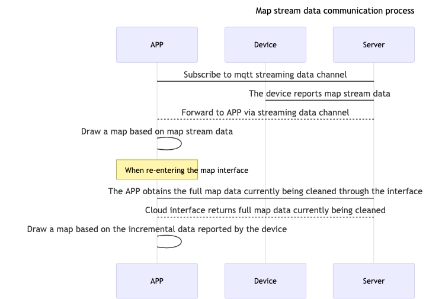

1. Gyroscope and Visual Sweeper
1.1. HTTPS Interface
1.1.1. Get Latest Record
API： tuya.m.device.media.latest
Version： 2.0
Request Parameters
| Parameter | Type | Description |
|---|---|---|
| devId | String | Device Id |
| start | String | Start position (the first pass is empty, then fill the startRow value in the return value of the previous page when taking the next page) |
| size | Integer | Query data size (fixed parameter is 500) |
Response parameters
| Parameter | Type | Description |
|---|---|---|
| devId | String | Device Id |
| startRow | String | Paging query index |
| dataList | Array | Streaming data |
| subRecordId | String | Record Id |
| hasNext | BOOL | Is there data on the next page |
Response Example
{
"devId":"6ccdd506b7186ee85avntm",
"startRow":"mtnva58ee6817b605ddcc6_35_1535629239586",
"dataList":[
"373702373700",
"383702383802373901383901383800",
"373802373901373800",
"373802363901363801373800",
"373702373602373600",
"373502373500",
"373502373402373301363301373400",
"363502363500",
"363502363500"
],
"subRecordId":35,
"hasNext":true,
"startTime":1535629049,
"endTime":1535629244,
"status":2
}
1.1.2. Get Record List
API： tuya.m.sweeper.cleaning.history.get
Version： 1.0
Request Parameters
| Parameter | Type | Description |
|---|---|---|
| devId | String | Device Id |
| offset | Integer | Paging offset |
| limit | Integer | Paging Size |
| startTime | Long | Start time |
| endTime | Long | End Time |
Response parameters
| Parameter | Type | Description |
|---|---|---|
| uuid | String | Input parameters when deleting records |
| dps | Array | The list of dpIds |
| 15 | String | The dpId of the cleaning record configured on the Tuya Iot |
| 201906171721009007 | String | The value reported by the device at the corresponding dpId is parsed as "June 17, 2019, 17:21, cleaning time 009, cleaning area 007", the specific data is aligned with the device end |
| totalCount | int | Total Count |
| hasNext | BOOL | Is there data on the next page |
Response Example
{
"datas":[
{
"devId":"xxxx",
"dps":[
{
"15":"201906171721009007"
}
],
"avatar":"https://airtake-public-data.oss-cn-hangzhou.aliyuncs.com/smart/user_res/avatar/scale/no_body_icon.png",
"userName":"xx",
"gmtCreate":1560763848501,
"uuid":"15607600058B81A6C4A0273FDD61091D0B02403848501",
"userId":"0",
"tags":0,
"status":1
}
],
"hasNext":false,
"totalCount":2
}
1.1.3. Get Record Detail
API： tuya.m.device.media.detail
Version： 2.0
Request parameters
| Parameter | Type | Description |
|---|---|---|
| devId | String | Device Id |
| subRecordId | String | Record Id |
| start | String | Start position (the first pass is empty, then fill the startRow value in the return value of the previous page when taking the next page) |
| size | Integer | Query data size (fixed parameter is 500) |
Response parameters
| Parameter | Type | Description |
|---|---|---|
| devId | String | Device Id |
| startRow | String | Paging query index |
| dataList | Array | Streaming data |
| subRecordId | String | Record Id |
| hasNext | BOOL | Is there data on the next page |
Response Example
{
"devId":"6ccdd506b7186ee85avntm",
"startRow":"mtnva58ee6817b605ddcc6_31_1535622776561",
"dataList":[
"3e3f02403e013e3f00",
"3f3f024040013f3f00",
"3f3f02403f014040013f3f00",
"3f40024140014040013f3f024041013f41013f3f00",
"3f3f024040014041013f41013f3f00"
],
"subRecordId":31,
"hasNext":true,
"startTime":1535621566,
"endTime":1535623017,
"status":2
}
1.1.4. Delete Record
API： tuya.m.sweeper.cleaning.history.delete
Version： 1.0
Request parameters
| Parameter | Type | Description |
|---|---|---|
| devId | String | Device Id |
| uuid | Integer | Clean the record uuid, pass uuid to clear the specific record |
Response Example
{
"result":true,
"success":true,
"status":"ok",
"t":1557740732829
}
1.2. Data Transfer Subscribe
1.2.1. Data flow

1.2.2. Function Introduction
The graffiti gyroscope or visual sweeper uses a stream channel to transmit map data and implements the TuyaSmartSweeperDeviceDelegate proxy protocol to receive callbacks for receiving map stream data.
| Class | Description |
|---|---|
| TuyaSmartSweepDevice | Tuya sweeper device management class |
1.2.3. Subscribe Data Stream
Declaration
Subscribe to the device's map streaming data
- (void)subscribeDeviceDataTransfer;
Example
Objc:
- (void)subscribeDevice {
[self.sweeperDevice subscribeDeviceDataTransfer];
}
Swift:
func subscribeDevice() {
sweeperDevice?.subscribeDeviceDataTransfer()
}
1.2.4. Unsubscribe Data Stream
Declaration
Unsubscribe map stream data from device
- (void)unsubscribeDeviceDataTransfer;
Example
Objc:
- (void)unsubscribeDevice {
[self.sweeperDevice unsubscribeDeviceDataTransfer];
}
Swift:
func unsubscribeDevice() {
sweeperDevice?.unsubscribeDeviceDataTransfer()
}
1.2.5. Data Stream Callback
Declaration
Real-time callback of streaming data reported by the device
- (void)sweeperDevice:(TuyaSmartSweeperDevice *)sweeperDevice didReceiveStreamData:(NSData *)data;
Parameters
| Parameter | Description |
|---|---|
| sweeperDevice | TuyaSmartSweeperDevice Instance object |
| data | Streaming data（ NSData） |
Example
Objc:
self.sweeperDevice = [TuyaSmartSweeperDevice deviceWithDeviceId:<#devId#>];
self.sweeperDevice.delegate = self;
- (void)sweeperDevice:(TuyaSmartSweeperDevice *)sweeperDevice didReceiveStreamData:(NSData *)data {
}
Swift:
sweeperDevice = TuyaSmartSweeperDevice.init(deviceId: "your_devId")
sweeperDevice?.delegate = self
func sweeperDevice(_ sweeperDevice: TuyaSmartSweeperDevice, didReceiveStreamData data: Data) {
}